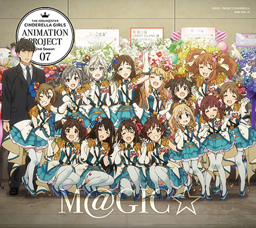

イベントロゴ
- - ランキング - -
8位
S(mile)ING! ~For Rin Rearrenge Mix~
(SS3A Live Sound Booth♪ SPECIAL LIVE ALBUM 収録)
SS3AのBDを買おうと思ったきっかけの1曲。福原綾香ってこんな歌声出せるのか(失礼)
曲の歌詞一つ一つに感情が込められていて感動した。
卯月のソロを凛が歌うとかいうエモさの暴力。たまらん。
7位

夢色ハーモニー (オリジナル・カラオケ)
THE IDOLM@STER CINDERELLA GIRLS ANIMATION PROJECT 2nd Season 07「M@GIC☆」 収録
目 覚 ま し
平日3日はこの曲で目覚める。イントロが最高すぎる。以上
6位
Athanasia
THE IDOLM@STER CINDERELLA MASTER 3chord for the Dance! 収録
ゆ よ ゆ っ ぺ
Athanasia(意味は不滅)
歌い出しから｢ 形あるもの 命あるもの いつか終わる日が来る だけど貴方と 育てた夢は 永遠に生き続ける｣
と儚げな感じを伝えつつサビで明るく彩る曲。正直この曲は言い表すのが難しい
FutureBassはいいぞ
5位
ガールズ・イン・ザ・フロンティア (M@STER VERSION)
THE IDOLM@STER CINDERELLA GIRLS STARLIGHT MASTER 30 収録
「 夢は夢で終われない 」(お願い！シンデレラ)から
↓
「 だってシンデレラはがんばり屋でしょ 」(M@GIC)、
↓
「 自分の足で歩けシンデレラ 」と仲間のみんなを頼っていたアイドルが自分の足道(未知)を拓け、と。
3周年曲でそんなアイドル達の成長を曲で表してる。
(余談)6thの音源があればそっちになっていた...動画はYoutubeにあるので聴こうね(7:40から)
動画URL4位
さよならアンドロメダ(大和亜季ソロ・リミックス)
THE IDOLM@STER CINDERELLA GIRLS 6thLIVE MERRY-GO-ROUNDOME!!! MASTER SEASONS AUTUMN! SOLO REMIX 収録
さよならアンドロメダがいい曲というのは周知の事実、その中でも自分はこのソロリミックスがすき。
村中知さんの歌い方、歌詞の一つ一つが聴き取りやすく、且つサビの「 みせてあげる 」を囁くように歌うのが堪らなくすき
3位
TRUE COLORS(M@STER VERSION)
THE IDOLM@STER CINDERELLA GIRLS STARLIGHT MASTER for the NEXT! 01 TRUE COLORS収録
恒例のラスサビ前転調大好きマン。
1番サビのあたりからギターが強くなってピアノとセッションするかのような曲調ですき。
演奏もアレンジが組み込まれていって印象がガラッと変わるのが本当にカッコイイ。
2位
Twilight Sky
THE IDOLM@STER CINDERELLA MASTER 012 多田李衣菜 収録
担当Pだからだろとかいう忖度は一切無しでこの曲はまじですき。
｢ 巧く歌うんじゃなくて 心を込めて歌うよ 世界でたった一人の 君に伝わりますように ｣
この歌詞がキャラの性格にぴったり過ぎる。何食ったらこんな歌詞かけるんですか？教えてください。(知恵コイン500枚)
1位
Always
THE IDOLM@STER CINDERELLA MASTER 恋が咲く季節 収録
「 いつも いつも いつも
あなたは見つめていてくれてたんだね
私に出会ってくれて ありがとう
いつも いつも いつも 私はあなたに愛されていたんだね
私を見つけてくれて ありがとう
私を選んでくれて ありがとう 」
サビラストに私を(見つけてくれて・選んでくれて)ありがとう、という歌詞。
アイドルとして輝くためには、愛される・努力する為にはプロデューサーに選ばれる・出会える事が始まりなのだということを教えてくれる曲。
(余談)平日2日はこの曲のオリジナル・カラオケで目覚めてます
きもちい